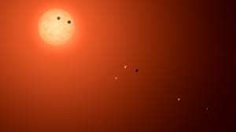
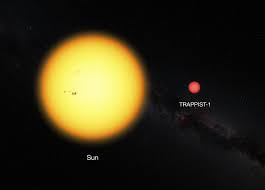
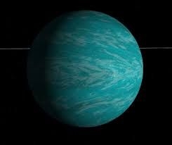
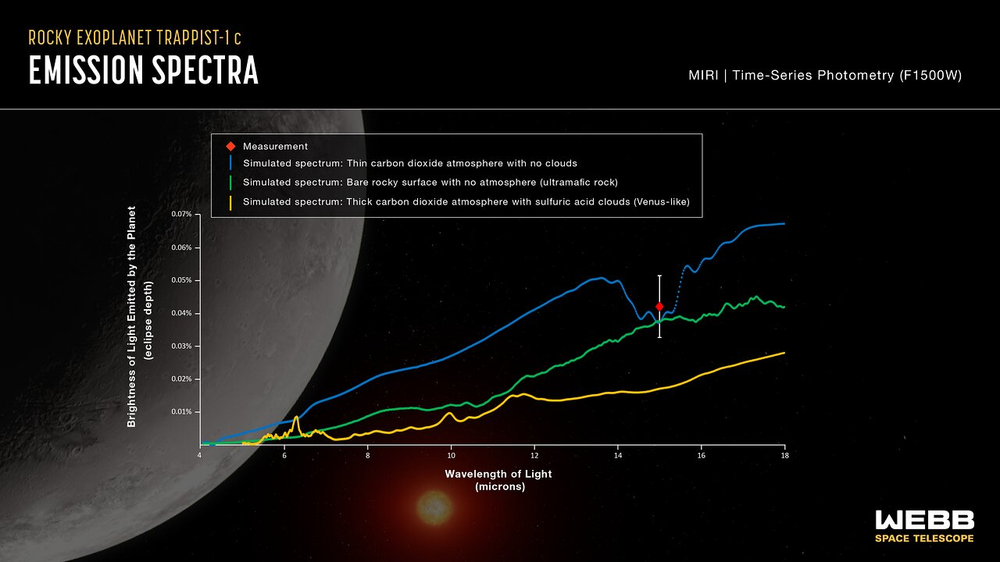
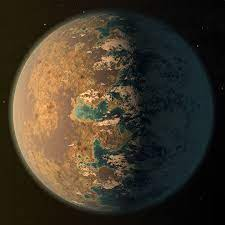
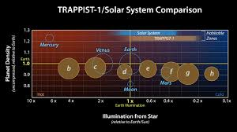
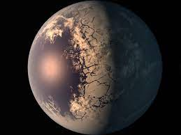
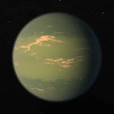
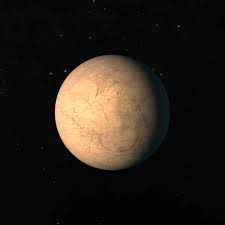

TRAPPIST-1 is an M-class red dwarf star that has seven known planets. It is 39.46 light years from the Sun and only has around 9% the Sun's mass. Its planets are all terrestrial and Earth-like in mass.
TRAPPIST-1 has only 9% the Sun's mass (or 90 times Jupiter's), 0.00522% of its luminosity and 11.92% its radius. Being so small, it is classified as an M-type star (M-type stars have a mass between 8% and 45% of the Sun's mass; Any smaller and they are no longer able to fuse hydrogen and are considered brown dwarves instead of stars and any higher they become K-type stars). Stars this small live for trillions of years (Compared to the Sun which will explode at 12 billion years old and more massive stars with bigger explosions detonating at a few million years old), longer than the current age of the universe, since they burn what little hydrogen fuel they have extremely slowly. Small stars are also very active and produce solar flares much more often than larger stars. TRAPPIST-1's original name was 2MASS J23062928-0502285 because it was discovered in 1999 with the Two Micron All-Sky Survey.
TRAPPIST-1b is the first planet in the TRAPPIST-1 system. It orbits TRAPPIST-1 at a distance of 0.011 AU (Astronomical Units, 1 AU is the distance between the Earth and the Sun). For comparision, Mercury orbits at 0.4 AU from the Sun. The planets are this close due to their star's weaker gravity. It completes an orbit in 1.51 Earth days (compared to 88 on Mercury) and is tidally locked to its star (The same side of the planet is always facing the star, so on one side there is constant daylight while on the other there is constant night time) like all the other planets in the TRAPPIST-1 system. Due to its distance to TRAPPIST-1 and its lack of atmoshpere, the temperature on the sun-lit side is about 500 Kelvin (about 230 celsius). The planet is classified a Super Earth (a terrestrial planet larger than Earth) with a radius 9% greater than Earth's but only 85% its mass, indicating a lower density. Below is a hypothetical visualisation.
TRAPPIST-1c is the the second planet in the TRAPPIST-1 system. Orbiting at 0.015 AU from TRAPPIST-1, the planet completes an orbit in 2.42 Earth days. For comparison, Jupiter's furthest major moon, Callisto, orbits at 0.013 AU from Jupiter. TRAPPIST-1c is another Super-Earth, with a mass of 1.38 Earths and the radius of 1.06 Earths, a higher density planet. The predicted atmosphere of TRAPPIST-1c is thin, consisting mainly of oxygen with traces of carbon-dioxide. While TRAPPIST-1b can be seen as a large Mercury, TRAPPIST-1c is not a Venus analog because of its minimal CO2. The temperature on the day side reach a mere 380 Kelvin (110 Celsius), almost 400 degrees cooler than Venus.
TRAPPIST-1d is the third planet from TRAPPIST-1 and is potentially the first in the habitable zone, a region around every star in which water, if present, is liquid. This planet is also the smallest one in the TRAPPIST-1 system, which a radius of only 0.77 Earths and a mass of 0.41 Earths. TRAPPIST-1d orbits at a distance of 0.021 AU with an orbital period of 4.05 Earth days. The planet's low density suggests that it has either a thick atmoshphere, an ocean or a layer of ice on the night side. This planet could also have, instead of an ocean, a thin strip of liquid water on the terminator, border between day an night where there is perpetual dawn/dusk. Below is a hypothetical visualisation.
TRAPPIST-1e is the fourth planet in the TRAPPIST-1 system and the first to definitely be in the habitable zone. With a mass of 0.62 Earths and a radius of 0.92 Earths, the planet orbits at 0.028 AU, giving it an orbital period of 6.1 Earth days. The planet lacks an atmosphere and its dayside temperatures reach about 500 Kelvin (230 Celsius). Although that would too hot for liquid water, the terminator might have more favourable conditions.
TRAPPIST-1f is the fifth planet from TRAPPIST-1 at 0.038 AU. It has a mass of 1.039 Earths, a radius of 1.045 Earths and an orbital period of 9.2 days. The planet is most likely covered in ice with potentially an ocean at the pupil (if water is present), or the region where there is constant noon. Below is a hypothetical visualisation.
TRAPPIST-1g is the sixth planet in the TRAPPIST-1 system at 0.047 AU from TRAPPIST-1. At 1.32 Earth masses and 1.13 Earth radii, the Super Earth is the largest planet in its system. The planet orbits at 0.047 AU and has an orbital peroid of 12.4 Earth Days. This planet is likely to host an dense atmosphere of water vapuor and might have a significant enough greenhouse affect that a global ocean of liquid water could exist.
TRAPPIST-1g is the seventh and final planet from TRAPPIST-1 at 0.062 AU, giving the planet an orbital period of 18.8 Earth Days. Jupiter's farthest moon, S/2003 J2, orbits at 0.19 AU, over three times further than TRAPPIST-1h. The planet is also the smallest in the system at 0.755 Earth radii and 0.326 Earth masses. The low density of this planet suggests a thick shell of water ice or ice of other volatiles. The planet most likely doesn't have an atmoshpere, so no ocean can emerge from the greenhouse effect, though volcanic activity, if present, could heat up the ice to sufficent temperatures for a subsurface ocean like the one on Europa, though its oceans are kept warm by Jupiter's tidal forces instead of volcanic activity.
